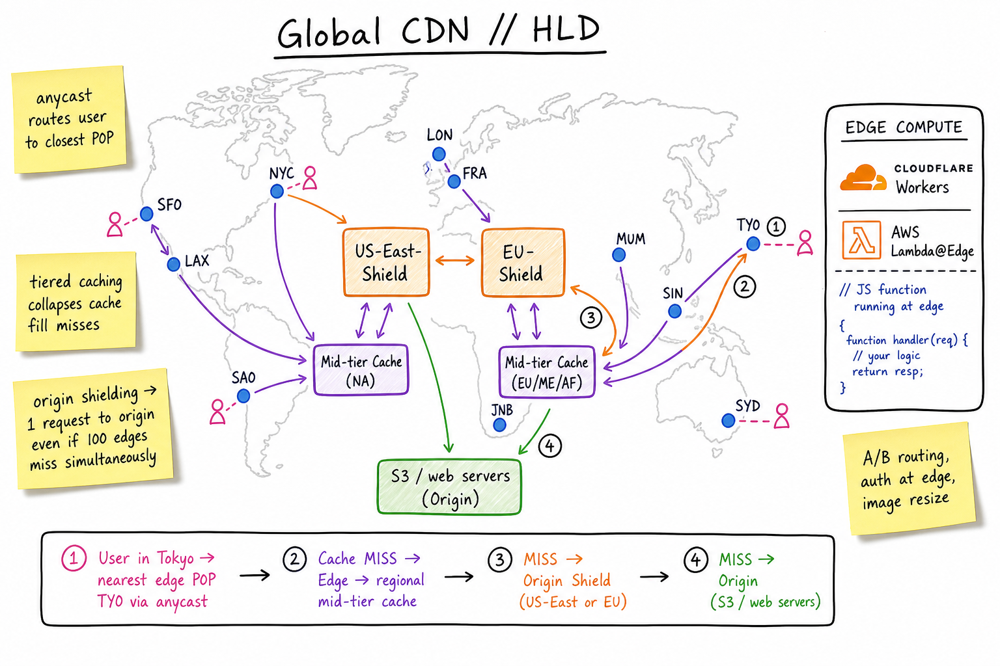
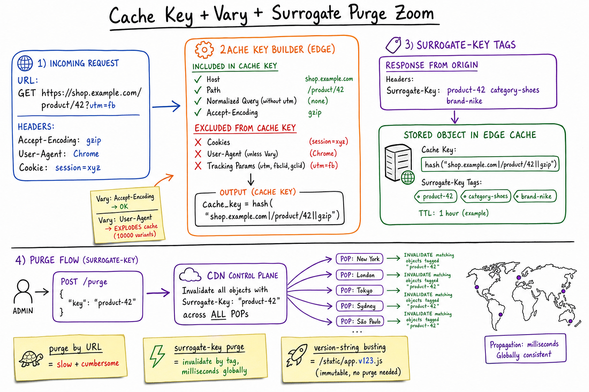

CDN // Deep Dive
Globally distributed cache + edge compute layer that shields the origin and brings content close to users. The single highest-leverage piece of infrastructure for read-heavy systems: cuts latency by 10–100×, origin traffic by 10–1000×, and adds a place to run code at the edge.

Global POPs serve users via anycast. Misses cascade up: edge → mid-tier → origin shield → origin. Edge compute (Workers / Lambda@Edge) runs at the POP layer for A/B routing, auth, and personalisation.
01 — Identity
A CDN is a globally distributed network of caching proxies plus, increasingly, an edge compute platform. It sits in front of your origin: takes the TCP/TLS termination near the user, serves cached responses when it can, fetches from origin when it must.
Two big jobs:
- Latency reduction — user’s TCP/TLS handshake terminates ~10ms away instead of ~200ms; cached bytes ship at line rate. Compounding effect: HTTP/2 / 3 reuse the warm connection.
- Origin offload — 90–99% cache-hit ratio is achievable for static-ish content. Your origin sees a small fraction of total traffic.
The Big Five operate ~tens of thousands of POPs combined: Cloudflare, Fastly, Akamai, Amazon CloudFront, Bunny (plus Google CDN, Azure Front Door, KeyCDN). They differ on edge-compute model, cache controls, and pricing more than on raw throughput.
01a — Core Concepts
| Term | Meaning |
|---|---|
| POP / edge node | A physical location with caching boxes serving nearby users. ~50–300+ per CDN globally. |
| Origin | Your own server / object store that holds the source of truth. |
| Cache key | The string the CDN uses to look up a cached object. Built from URL + selected headers. |
| TTL | How long the edge may serve the cached copy without revalidating. From Cache-Control. |
| SWR / SIE | stale-while-revalidate & stale-if-error — serve stale during background refresh / origin outages. |
| Surrogate key / tag | One or more arbitrary labels attached to a cached object. Lets you purge by tag, not URL. |
| Purge | Force eviction of a cached object globally (or by tag, or by prefix). |
| Origin shield | A designated middle-tier POP that collapses cache misses on the way to origin. |
| Tiered caching | Edge → mid-tier → shield. Each layer absorbs more misses. |
| Anycast | BGP technique: same IP announced from many POPs; user’s packets routed to nearest. |
| GeoDNS | Alternative routing: DNS returns different IPs based on the resolver’s location. |
| ABR | Adaptive Bitrate — HLS / DASH playlists pointing at multiple bitrate segments. |
| Edge compute | Run small functions at the POP: Cloudflare Workers (V8 isolates), Lambda@Edge, Fastly Compute (Wasm), Vercel Functions. |
| WAF | Web Application Firewall — rule engine at the edge for OWASP, bot, DDoS protection. |
01b — API / Wire Surface
The wire is HTTP — cache controls are headers
# Origin response (what the CDN sees)
HTTP/1.1 200 OK
Content-Type: image/jpeg
Cache-Control: public, max-age=3600, s-maxage=86400,
stale-while-revalidate=600, stale-if-error=86400
Surrogate-Control: max-age=2592000 # CDN-only TTL (Fastly)
Surrogate-Key: product-42 category-shoes brand-nike
Vary: Accept-Encoding
ETag: "abc123"
Last-Modified: Wed, 20 May 2026 10:00:00 GMT
# Edge response to user adds debug headers
Age: 412
X-Cache: HIT
X-Cache-Hits: 9120
Server-Timing: cdn-cache;desc=HIT, edge;dur=2
Admin / control plane
# Purge a single URL
POST /api/cache/purge { "urls": ["https://shop.example.com/product/42"] }
# Purge by surrogate key (preferred)
POST /api/cache/purge-by-tag { "keys": ["product-42"] }
# Purge everything (last resort - causes origin storm)
POST /api/cache/purge-all
# Edge config / route rules
PUT /api/distributions/{id}/behaviors { "path": "/api/*", "ttl": 0, ... }
The non-obvious contract:max-ageapplies to both browser and intermediate caches;s-maxage(orSurrogate-Control: max-age) is for the CDN only. Setmax-ageshort ands-maxagelong when you want users to revalidate but the CDN to hold a hot copy.
02 — When to Use / When NOT to Use
| Use a CDN when… | Don’t use when… |
|---|---|
| Public reads dominate (web pages, images, video, scripts, downloads). | Strongly per-user data with no shared cacheable substrate. |
| Users are globally distributed and origin is in one region. | You need single-digit-ms write latency — CDNs are not built for write proxies. |
| You need DDoS mitigation, TLS termination, anycast. | Strict data-residency where data must not leave a region (use regional CDN tier). |
| You want a place to run code close to users (A/B, redirects, auth). | The dataset is so small & latency-tolerant that your origin alone suffices — CDNs add billing & cache-correctness complexity. |
| Video streaming, large file delivery, OS updates. | The whole site is logged-in personalised HTML with no cacheable fragments and no edge compute. |
03 — Architecture
The hierarchy
User
|
v anycast / geoDNS
+--------------+
| Edge POP | <-- 50 - 300 globally; user's nearest
| (cache + LB) |
+------+-------+
| miss
v
+--------------+
| Mid-tier POP | <-- regional consolidator (continent / country)
+------+-------+
| miss
v
+--------------+
| Origin Shield| <-- 1 - few per origin; collapses misses
+------+-------+
| miss
v
+--------------+
| Origin | <-- your servers / S3 / GCS
+--------------+
Each layer caches with its own TTL; misses pass through. The deeper the request goes, the more it consolidates — a thundering herd of 100k edge misses for the same key can fan in to one origin request via shielding.
Request routing
- Anycast (Cloudflare, Fastly, Bunny): same IP advertised from every POP. The internet routes the user to whichever POP is nearest via BGP. Sub-second failover if a POP goes dark.
- GeoDNS (Akamai classic): DNS returns POP-specific IPs based on the resolver location. Worse mobile DNS resolvers undermine accuracy.

The cache key is the only thing that determines hit vs miss. Decide carefully what goes into it (host, normalised path, Accept-Encoding) and what doesn’t (cookies, marketing params, User-Agent). Vary adds variants; Surrogate-Key tags allow bulk purges.
04 — Cache Key & Vary — The Hit-Rate Story
Hit ratio is the CDN’s most important number. It collapses if your cache key has too many dimensions.
The cache key
- Always: scheme + host + path.
- Usually: a normalised query string (sort params; strip tracking junk like
utm_*,fbclid,gclid). - Often:
Accept-Encodingbucket (gzip vs br vs none) to avoid serving br to a non-br client. - Sometimes: country / device class from edge logic (for personalised but coarse-grained variants).
- Almost never: cookies, user-agent verbatim, session tokens. They explode the cache.
The Vary trap
Vary: User-Agent tells the cache “keep a different copy per distinct UA value”. Even subtle UA differences (Chrome 125 vs 126, mobile vs desktop, every bot) yield separate cache entries — your hit rate collapses to nothing.
Safer alternatives: Vary: Accept-Encoding (a few values, OK), or do the bucketing yourself with edge code that normalises UA → x-device-class: mobile|desktop before the cache key is computed.
Practical recipe
# Edge logic (pseudocode)
canonical_url = strip_tracking(url) # remove utm_*, fbclid, ...
device = classify(headers["user-agent"]) # "mobile"|"desktop"|"bot"
cache_key = hash(host + canonical_url + device + accept_encoding)
return cache.lookup(cache_key) || fetch_and_store(...)
05 — Purge Strategies
| Strategy | How | When to use |
|---|---|---|
| URL purge | POST list of URLs; CDN evicts each. | Targeted, one-off. Slow at scale (must enumerate every URL). |
| Surrogate-key purge | Tag responses (Surrogate-Key: product-42 category-shoes); purge by tag. | The right answer for content systems — one tag covers home, list, detail, search results. |
| Prefix / wildcard purge | Purge everything under /static/v3/. | Versioned static assets at deploy time. |
| Version-string busting | Make the URL change instead: /static/app.v123.js. | Immutable assets. Hashed filenames after build. No purge cost. |
| Purge all | The nuclear option. | Avoid — causes a thundering herd to origin. Capacity-plan before pressing. |
Surrogate keys (Fastly), Cache-Tags (Akamai), tags + tag-based purge (Fastly, Cloudflare Enterprise, Vercel Data Cache) are the modern recipe. Tag each response with everything it depends on: page-home, product-42, category-shoes, user-segment-A. When the product changes, purge product-42 and every cached representation of it goes.
06 — Origin Shielding & Tiered Caching
If 100 edge POPs simultaneously miss the same object, they’ll each connect to origin → 100 concurrent requests for one byte sequence. Origin gets hammered, especially during a deploy that invalidated something popular.
Origin shield = designate 1 (or a few) POPs as the single funnel through which all misses must pass. The shield’s own cache collates simultaneous misses (request coalescing) so origin sees one request even if 1M users hit edges at the same instant.
Without shield, miss storm: 100 edges --> 100 requests --> origin :( With shield + request coalescing: 100 edges --> 100 to shield --> 1 to origin :) shield's fetch result is broadcast back to all 100 edges.
Pick the shield POP near origin to minimise the miss-path RTT. Most CDNs offer it as a checkbox.
07 — ABR Video Streaming
Video is the heaviest CDN workload by bytes. HLS (Apple) and MPEG-DASH chop video into 2–10 second segments encoded at multiple bitrates. The player downloads the manifest, then segments at the bitrate its bandwidth can sustain — switching up or down per segment.
master.m3u8 (manifest) /360p.m3u8 -> seg001.ts, seg002.ts, ... /720p.m3u8 -> ... /1080p.m3u8 -> ... /audio.m3u8 -> ... Each .ts (or .m4s) segment is its OWN cacheable object. HIGH cache hit ratio - millions of users converge on the same segments.
- The manifest is short-TTL (5–30s for live, hours for VOD).
- The segments are immutable — long TTL, no purge needed.
- Token-protect manifests if content is paid. Segments inherit the protection via signed URLs / signed cookies.
- Live: segments are produced just-in-time; CDN shield collapses the “everyone wants the just-published segment” storm.
08 — Dynamic Content Acceleration
Even uncacheable responses benefit from a CDN. The wins are network-level, not cache-level:
- TLS termination at edge: 1-RTT handshake (TLS 1.3) close to user; persistent connection back to origin.
- Connection re-use: edge keeps warm HTTP/2 / 3 pools to origin — user pays one TLS handshake regardless of how many objects they fetch.
- Smart routing: CDN’s private backbone between POPs often beats public-internet BGP, especially for cross-region traffic.
- Compression at edge: gzip/br/zstd applied at the POP using a shared encoder pool.
- 0-RTT for repeat visitors: TLS 1.3 + HTTP/3 lets returning users send the request inside the first packet.
09 — Edge Compute
Most modern CDNs offer a JS / WebAssembly runtime at the POP layer. You attach a function to a route and it runs on every request — before the cache (rewrite, auth) or after (transform response).
| Platform | Runtime | Cold start | Notes |
|---|---|---|---|
| Cloudflare Workers | V8 isolates (no full JS process) | ~ms | Sub-ms cold start; KV + Durable Objects; broad POP coverage. |
| Fastly Compute | WebAssembly (Lucet/Wasmtime) | < ms | Polyglot via Wasm; Rust/Go/AssemblyScript. |
| Lambda@Edge / CloudFront Functions | Node / lightweight JS | Functions: ms; Lambda@Edge: 10s ms | CloudFront Functions for header rewrites; Lambda@Edge for fuller logic. |
| Vercel Edge Functions | V8 isolates (Cloudflare under the hood) | ~ms | Tight Next.js integration. |
Typical use cases
- A/B routing & feature flags (cheap to evaluate per request).
- Auth check & redirect at edge (signed JWT verification, geo-block).
- Personalisation tokens injected into otherwise cacheable HTML (ESI / fragment caching).
- Image resize / format selection (WebP for Chrome, AVIF for Edge, JPEG fallback).
- Bot / abuse detection before origin ever sees the request.
10 — Security at the Edge
WAF
Rule engine sitting in the request path. OWASP top 10 protection, custom rate-limits per endpoint, country blocks, bot rules, signature-matching for known exploits. Crucially: the edge sees the unencrypted request first, so it’s the right place for filtering.
DDoS mitigation
CDN absorbs volumetric attacks because each POP has tens to hundreds of Gbps. The attack flattens against the network instead of your origin. Anycast spreads the load further — a botnet hitting one IP from 50 countries gets split across 50 POPs.
Origin shielding for security
- Restrict origin firewall to accept connections only from the CDN’s published IP ranges (or use a private origin link).
- Use a shared secret header (
X-Origin-Auth) so attackers who learn the origin IP can’t bypass the CDN. - Rotate origin IPs & use a private CDN-to-origin tunnel for the strongest defence.
11 — Signed URLs & Cookies
Caching private content needs care. Approaches:
- Signed URLs — URL contains a token
?Expires=...&Signature=...&Key=.... CDN verifies signature at edge; cache key intentionally excludes the token so multiple users share the cached bytes (the token only gates access, not identity). - Signed cookies — cookie carries the auth; CDN verifies; same caching benefit. Easier for browser-based clients.
- Per-user encryption — if the bytes are private to one user, you can’t share the cache. Live with low hit-rate or move auth-bypassing operations to edge compute (decode token, swap user-specific bytes in via templating).
Common bug: signing puts the user’s identity into the URL, which lands in the cache key by default. Configure the CDN to strip the auth params from the cache key.
12 — Operational Concerns
| Metric | What to watch |
|---|---|
| Cache hit ratio | The KPI. 90%+ for static; 50–70% for typical app; if dropping → investigate Vary, cookies, miscached errors. |
| Origin 5xx rate | Monitor separately from edge errors. A spike to origin even with stable edge means TTLs are too short or shield is broken. |
| Cache key cardinality | Some CDNs expose unique-keys-per-hour. A blow-up = something is in the key that shouldn’t be. |
| Purge latency | P95 propagation: 1–5s on Cloudflare/Fastly, up to minutes elsewhere. Affects content-go-live time. |
| Egress cost | The bill. Per-GB pricing differs 10× between providers; tiered by region. |
| Edge error budget | POP outages happen. Anycast usually masks; for graceful degradation, set stale-if-error. |
Anti-patterns to spot
- Caching
500/502/503from origin with a long TTL — you propagate the outage globally. - Caching with a
Set-Cookieresponse — every user gets one session inadvertently. - Forgetting to purge after a deploy — stale assets reference deleted endpoints.
- Using
Vary: User-Agent— cache hit-rate floor of 0. - Per-user query params in cache key — same as above.
13 — Usage Patterns (back to A cheatsheets)
- Search Autocomplete — cache popular prefixes’ suggestions at the edge for milliseconds, fall through to origin for the long tail.
- FB Live Comments — initial history snapshot cached at the edge; live tail comes via WebSocket bypassing the CDN.
- Proximity Service — business photos & static menu data on long-TTL with surrogate keys per business id.
- Email Service — inline-image proxy at edge (privacy + tracker-stripping) with short TTL per (user, image) tuple.
- Static asset delivery for every web HLD — JS / CSS / images / fonts behind hashed URLs and immutable TTLs.
- OS / app updates, game patches, model weights downloads — perfect CDN workload.
14 — Alternatives Compared
| Provider | Strengths | Watch out |
|---|---|---|
| Cloudflare | Cheapest egress (free tier), Workers (V8 isolates — ms cold start), R2 (zero-egress object store), broad POP map, strong DDoS. | Cache TTL tuning historically less granular than Fastly; KV write latency. |
| Fastly | Instant purge (~150ms global), surrogate keys, programmable VCL / Compute@Edge (Wasm). Loved by content companies. | Pricier; smaller POP count than Cloudflare; needs more tuning skill. |
| Akamai | The pioneer. Largest POP count. Battle-tested at hyperscale. Strong WAF + bot defence. | Older config model (Property Manager); enterprise pricing & sales cycle. |
| Amazon CloudFront | Deep AWS integration (S3, Lambda@Edge, Shield). Easiest if you’re already AWS. | Pricier egress; slower purge propagation; fewer POPs than top 3. |
| Bunny | Aggressive pricing, modern UI, decent POP map, fast edge. | Smaller ecosystem; younger; less enterprise feature parity. |
| Vercel / Netlify Edge | Framework-aware (Next.js / Remix) caching, automatic per-route ISR, edge functions, surrogate-tag purge tied to revalidation. | Hosted-only; high cost at scale; opinionated. |
| Google CDN / Azure Front Door | If you’re already on those clouds and want one-stop. | Feature gaps vs CF/Fastly on edge compute. |
Mid-2020s trend: multi-CDN — route via DNS or smart steering to two CDNs for failover and per-region performance. Adds complexity (config drift) but is standard for top-tier ops.
15 — Interview Q&A
Why is a CDN faster than fetching from origin?
Two effects compound. (1) RTT reduction: TCP/TLS handshake terminates ~10ms away rather than ~200ms across continents; subsequent fetches reuse the warm connection. (2) Origin offload: 90%+ cache-hit ratios mean most bytes are served from the POP’s local SSD without ever talking to origin. Even uncacheable requests benefit from edge TLS termination, smart routing over the CDN’s private backbone, and connection re-use to origin.
How would you design the cache key for an API endpoint?
Include scheme + host + canonical path + normalised query string (strip tracking params, sort the rest). Add Accept-Encoding bucket for compression variants. Add device_class or country only if you genuinely serve different content per bucket. Exclude cookies, raw User-Agent, and per-user query parameters — they fragment the cache. If you must vary per user, you probably shouldn’t be caching at the CDN at all.
What’s the Vary header trap?
Vary tells the cache to keep a separate copy per distinct value of the named header. Vary: User-Agent means every Chrome version, every mobile UA string, every bot gets its own cached copy — hit rate collapses to near zero. Safe values are low-cardinality: Accept-Encoding (3–4 buckets), Accept-Language if you normalise. For UA-based variants, bucket them at edge compute into 2–3 classes and use a custom header instead.
How do surrogate keys make purges sane?
Without them you must enumerate every URL that may have cached the changed object — home page, list pages, search results, related-products widget on other pages. With surrogate keys you tag each response with the entities it depends on (product-42, category-shoes), then on change you purge by tag and the CDN evicts every cached representation that touched that entity in milliseconds globally.
What is origin shielding and why does it matter?
Without it, 100 edge POPs that simultaneously miss the same key make 100 origin requests — a thundering herd, often happening right after a deploy. Shielding designates one (or a few) POPs as the only path to origin; the shield does request coalescing so 100 concurrent misses become a single origin request whose response is broadcast back to all edges. It typically lifts cache hit ratio at origin from ~50% to ~95% and turns deploys into a non-event.
How does anycast routing work for CDNs?
Same IP is announced via BGP from every POP. When a user’s ISP routes a packet to that IP, normal shortest-path BGP picks the topologically nearest POP. If that POP goes dark, BGP withdraws the route and traffic flows to the next-nearest within seconds. The user’s OS doesn’t know or care — it just sees its packets get to the “same” server fast. GeoDNS does the same job at the DNS layer but is at the mercy of resolver location accuracy.
How do you cache personalised content?
Three patterns. (1) Edge Side Includes / fragment caching: cache the shared layout, fetch the personalised fragment at edge compute and stitch in. (2) Stale-while-revalidate with very short TTL: most users see fresh-enough content; the long tail revalidates. (3) Identity hashed to a coarse segment: bucket users into < 100 segments and cache per-segment. Pure per-user caching defeats the purpose — either accept the origin load or push the user-specific bit to edge compute.
Can a CDN accelerate dynamic / API traffic?
Yes, even when Cache-Control: no-store. Wins: TLS termination at edge (sub-10ms handshake), persistent HTTP/2 / 3 pool to origin (no per-request handshake), routing over the CDN’s private backbone often beats public-internet BGP cross-region, compression / image transcoding at edge, and WAF / DDoS / bot filtering before origin sees a packet. The bytes still come from origin, but the round-trips and connection setup move to the edge.
How do signed URLs interact with caching?
The signature gates access, not identity. Configure the CDN to exclude signing params from the cache key — otherwise every user gets a unique URL and you cache nothing. The CDN verifies the signature at edge (HMAC check) and serves the same cached bytes to all valid requests. For per-user content where bytes themselves differ, you cannot cache without compromising privacy — live with low hit rate.
What goes wrong if you purge all?
Every POP’s cache for your domain goes cold simultaneously. The next request for any URL is a miss — if shielding is on, those millions of misses collapse to one-per-key at the shield, then funnel to origin. If shielding is off, you may take down origin in seconds. Always prefer surrogate-key purge or version-busting; reserve purge all for security incidents and load-test for it.
Edge compute vs origin compute — how to decide?
Push to edge when the work is small (auth check, A/B routing, header rewrite, image format selection), has access to little state (or to CDN-provided KV / Durable Objects), and benefits from running close to the user. Keep at origin when the work is large (heavy computation, big database joins) or depends on transactional state. Hybrid is common: edge for auth + caching key derivation; origin for the actual business logic.
SDE-2 vs SDE-3 differentiation?
| SDE-2 | SDE-3 |
|---|---|
| Knows CDN caches static assets, anycast, TLS-at-edge | + cache-key cardinality & Vary trap, surrogate-key purge vs URL purge vs version-busting, origin shield & request coalescing for thundering-herd, signed URLs with cache-key stripping, edge compute trade-offs, stale-while-revalidate + stale-if-error, multi-CDN steering, security at edge (WAF / origin-secret), cost & hit-ratio diagnostics |